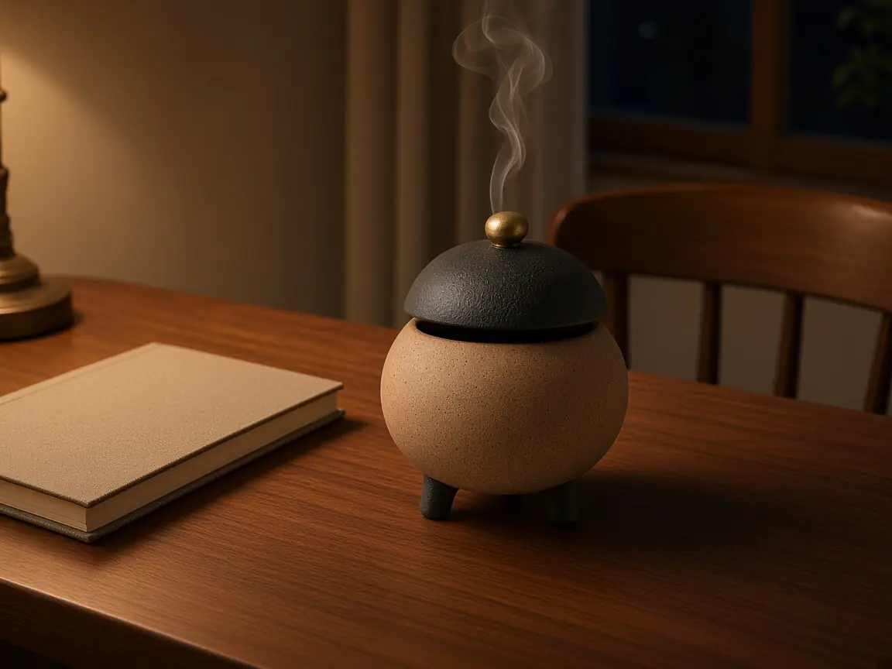
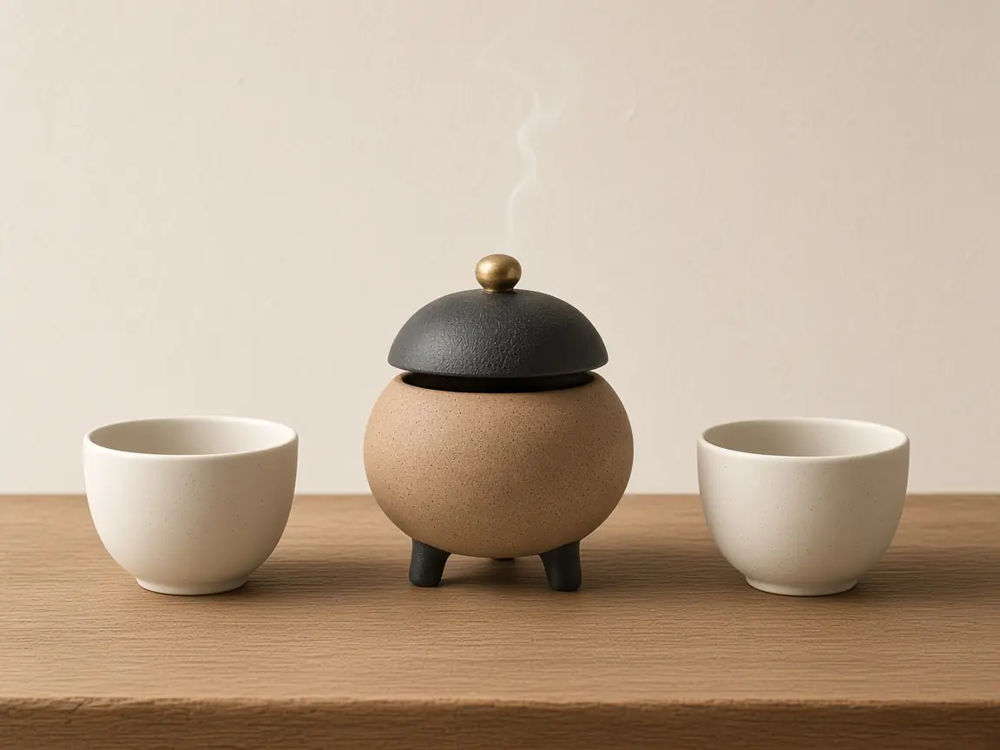
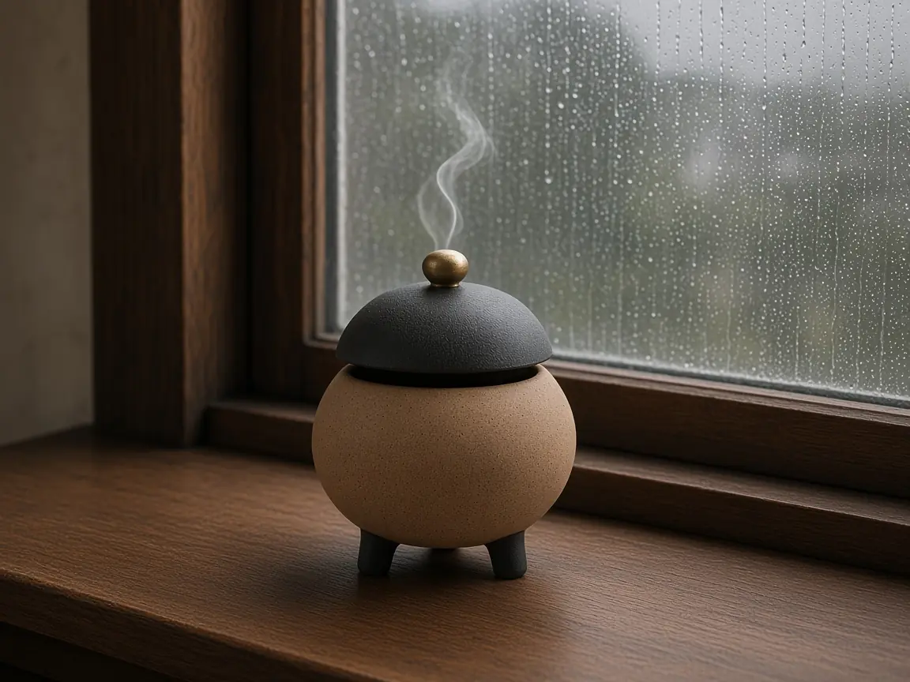
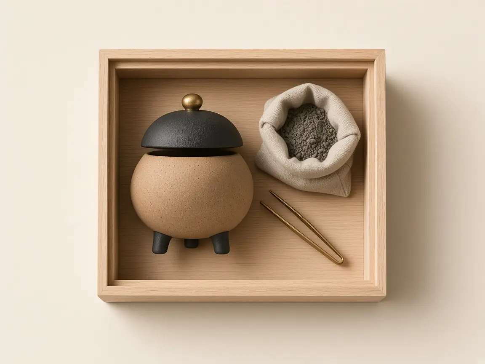
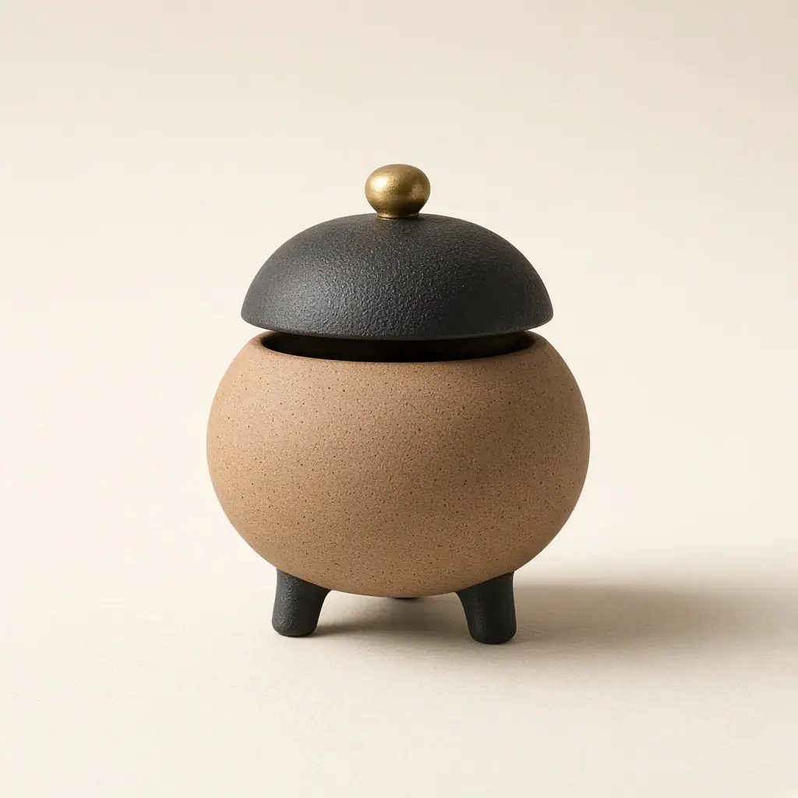
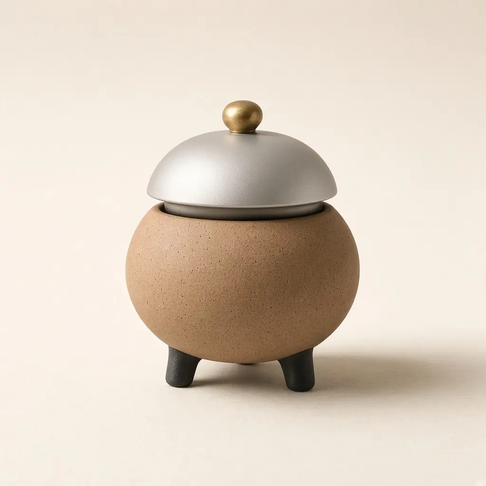

蓋
鋳鉄です。摘みだけ真鍮なので、熱いあいだは摘みを持ってください。蓋は炉に固定しません。隙間の幅で、煙の細さが変わります。
01
香で部屋を満たすための道具、とは工房では考えていません。一号は、その日の机を閉じるためのものです。
灰をならし、細い香に火をつけ、蓋の隙間を指一本ぶんにする。手順はそれだけです。火が消えたら、蓋を元に戻して、机の上をからにします。燃え尽きるまで、およそ15分です。
02
鋳鉄です。摘みだけ真鍮なので、熱いあいだは摘みを持ってください。蓋は炉に固定しません。隙間の幅で、煙の細さが変わります。
素焼きです。内側に灰を約1センチメートル敷きます。底に空気の穴はありません。火は小さく、急がず燃え終わります。
三本です。机に直に置いても、熱は脚の先で止まります。布は敷かなくてかまいません。漆の机には、念のため薄い板を一枚敷いてください。
03

19時40分
メールの続きは明日にすると決めた日に使います。香が燃え終わるまで、新しい画面は開きません。15分で尽きます。

来客の10分前
強い香りは向きません。一号に合うのは、甘くない白檀の細軸です。扉を開ける前に蓋を戻してください。残り香は、炉の中に残ります。

雨の午後
窓を少し開けて、煙の出口を作ります。雨の日は火の回りが遅いので、灰をいつもより2ミリメートル薄くしてください。
04
桐の箱に、次のものが入っています。
香そのものと、火をつけるマッチは入っていません。

05
中の灰と、火の見え方は同じです。違うのは、外側の金属の色だけです。注文のときに、どちらかを指定してください。

鋳鉄を黒く錆びさせ、油で拭いて手で持てるようにしてあります。指紋は残ります。気になる月だけ、乾いた布で拭いてください。

蓋の外側に錫を薄く掛けています。炉の素焼きは、黒錆と同じ土です。錫は水気に弱いので、濡れた布では拭かないでください。
06
08
付きません。長さ7センチメートルまでの細軸を、お手持ちのもので使ってください。甘い練香や、粉の香には向きません。炉が小さく、火が埋もれるためです。
向きません。風で火が片側に寄り、蓋の隙間から灰が落ちます。室内の、人の手が届く机で使ってください。
炉は水洗いしません。灰は月に一度、ふるいにかけて金属片を除きます。蓋の鋳鉄は乾いた布で拭きます。油は足さないでください。届いたときに、一度拭いてあります。
桐箱のまま渡せます。熨斗は工房では付けません。短冊を同梱するかどうかは、注文の手紙に一行書いてください。無地の短冊を一枚入れます。
黒錆は月の上旬、白錫は月の下旬に揃います。在庫がない月は、次に焼き上がる日を手紙で知らせます。発送から着荷まで、国内は4日から6日の設定です。
09
住所も電話番号も架空です。手紙は届かず、電話はつながりません。
閑炉工房様
黒錆の一号を一つ、下記へ送ってください。支払いは払込票を希望します。短冊は不要です。
氏名、住所、電話番号を続けて書きます。